Match Studio F.3: sert ürün incelemesi
22 Ekim 2026 · Mobil Chromium 360×780 · Canlı yayın · Sentetik kulüp
Genel hüküm
Özellik birikimi güçlü, kullanım düzeni zayıf. Kullanıcıya gereken işlemler gizlenirken sloganlar ve iç sistem kavramları öne çıkarılıyor. Üç somut doğruluk/koruma sorunu ve bir klavye odağı hatası gözlendi. Bu haliyle geniş kullanıcıya önerilmez.
Uygulama kodu veya yayın değiştirilmedi. Kayıtlar yalıtılmış tarayıcı oturumunda oluşturuldu. Önceki testler bu yeni senaryoları kapsamıyordu.
Öncelikli bulgular
P1 — Taslak kaybı
Sekme değişimi girilmiş maç alanlarını uyarısız siliyor.
İlk düzeltme: Önce taslakları koru; ayrılma uyarısı veya otomatik taslak kaydı ekle. Geri gelince aynen devam edilebilmeli.
P1 — Yanlış afiş bilgisi
Hazırlık maçı afişte lig maçı olarak adlandırılıyor.
İlk düzeltme: Tüm afiş başlıklarını maç türünden üret; her tür için çıktı içeriğini doğrula. Genel bir metin, yanlış bir resmî sınıflandırmadan daha güvenlidir.
P1 — Canlı/rapor süreleri ayrışıyor
Kronometre ilerlerken özet ve oyuncu tablosu eski süreyi gösteriyor.
İlk düzeltme: Aynı zaman izdüşümünü kullan; PDF/rapor üretiminde de güncel anı hesapla veya görünür snapshot zamanı belirt.
P1 — Modal odağı arka plana kaçıyor
Oyuncu ekleme açıkken Tab arka plandaki düğmeye gidiyor.
İlk düzeltme: Odağı açılan modalın içine taşı; kapatılana kadar içeride tut, kapanınca tetikleyiciye döndür.
P2 — İlk kurulumun sırası yanlış
Maç oluşturma öne çıkarılıyor; grup kurma ayarlar içinde saklı.
İlk düzeltme: Kulüp → grup/takım → oyuncu → ilk maç sıralı başlangıcı kur. Boş zorunlu seçicinin yanında grup ekleme olsun.
P2 — Canlı operasyon çok uzun
Gol/kart kontrolü sayfanın üçüncü ekranına itilmiş.
İlk düzeltme: Saat/skor ve Gol, Kart, Değişiklik eylemlerini tek operasyon görünümünde tut; rapor ve düzeltmeleri ayır.
P2 — Görsel gösteri işin önüne geçiyor
Slogan, sürüm, kulüp seçici ve tekrarlı metrikler mobil alanı tüketiyor.
İlk düzeltme: Ana ekranda sıradaki iş ve yaklaşan maç; saha ekranında saha öncelikli olsun. Tek ana görev, daha az başlık ve kart kullan.
P2 — Teknik dil ve bakım işleri karışıyor
JSON, origin, veritabanı, AES-GCM, oturum, PAKET E, OTHER gibi ifadeler kullanıcıya çıkıyor.
İlk düzeltme: Ana dili antrenörün görevlerine göre yaz. Teknik ayrıntıları gelişmiş yardımda, taşıma ve tehlikeli işlemleri ayrı bölümde tut.
Adım adım ekran kanıtları
25 görüntünün tamamı bu inceleme sırasında yakalandı veya uygulamadan indirildi; kaydedilen dosyalar açılıp incelendi.
1. İlk açılış ve kulüp kurulumu
Zayıf
360×780 görünümde büyük slogan ve logo, başlangıç düğmesini ilk ekranın altına itiyor. Yeni kullanıcıdan ilk anda kulüp rengi seçmesi isteniyor; henüz asıl değer gösterilmedi. Eski Darıca Gücü V2.4 taşıma metni her yeni kulübe gösteriliyor.
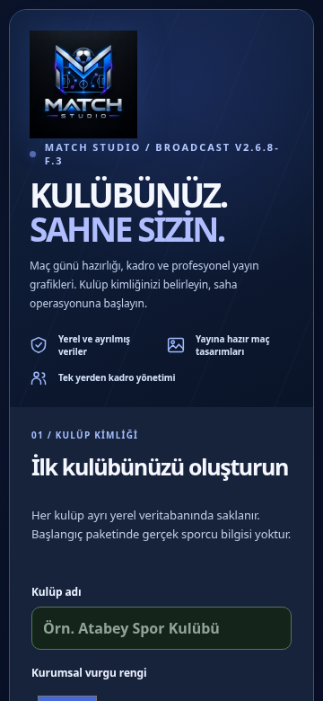
01-ilk-acilis.png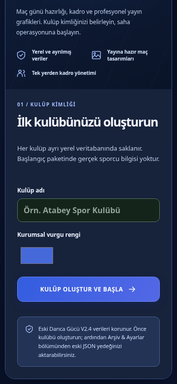
01b-kurulum-formu.png2. Kontrol merkezi
Zayıf
Kulüp oluşturulduktan sonra önceki kaydırma konumu korundu; ana ekran başlığı kesilmiş konumda açıldı. Dört yeni maç çağrısı var. Sloganlar ve boş karşılaşma dekoru, ilk gerekli iş olan grup oluşturmayı aşağıya itiyor.
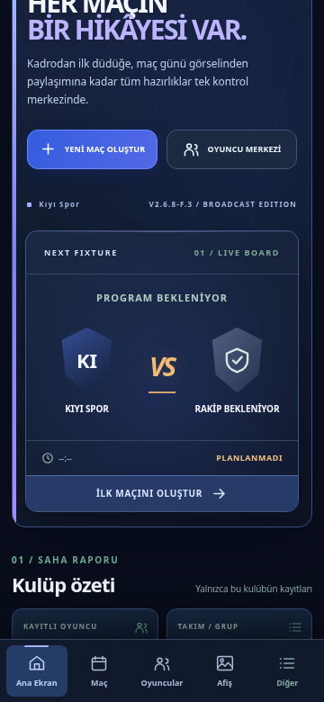
02-kontrol-merkezi.png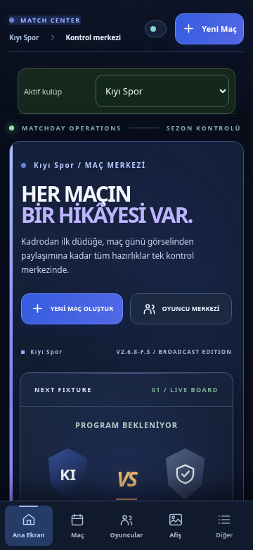
02b-ana-ekran-ust.png3. İlk maç girişimi
Akış tıkanıyor
Zorunlu Takım / Grup seçicisinde hiçbir grup yok. Bu ekranda grup oluşturma eylemi yok. Ana ekranın güçlü çağrısı kullanıcıyı tamamlayamayacağı bir forma getiriyor.
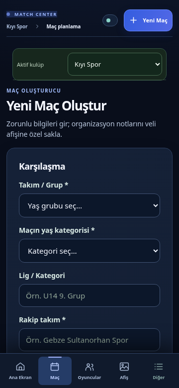
03-ilk-mac.png4. Oyuncu merkezi
Orta
Oyuncu ekleme bulunabilir, arama etiketli. Fakat sıfır kayıtta Bu filtrede oyuncu yok mesajı yanıltıcı; iki ekleme çağrısı ve CSV terimi boş ekranı gereksiz büyütüyor.
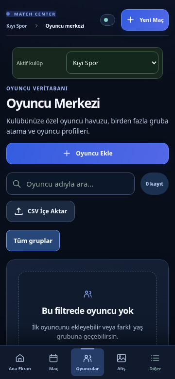
04-oyuncu-merkezi-bos.png5. Mobil gezinme
Zayıf
Canlı maç, kadro ve saha Diğer menüsünde; afiş ana menüde. Saha operasyonu önceliği bakımından seçim tartışmalı. Mobil menüdeki dokunma alanları ve etiketler genel olarak okunabilir.
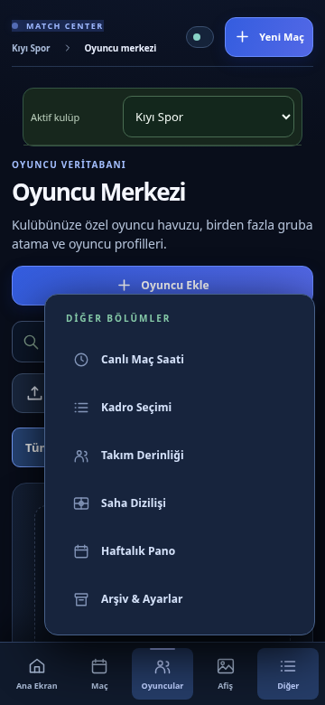
05-diger-menu.png6. Grup oluşturma ve ayarlar
Zayıf
Yaş grubu oluşturma alanı Arşiv & Ayarlar içinde yaklaşık 2801 px aşağıda. Önce eski veritabanı taşıma, kulüp silme, yedek ve kurtarma anlatılıyor. İlk gün gerekli bir işlem bakım işlerinin sonuna saklanmış.
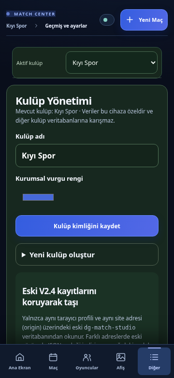
06-arsiv-ayarlar.png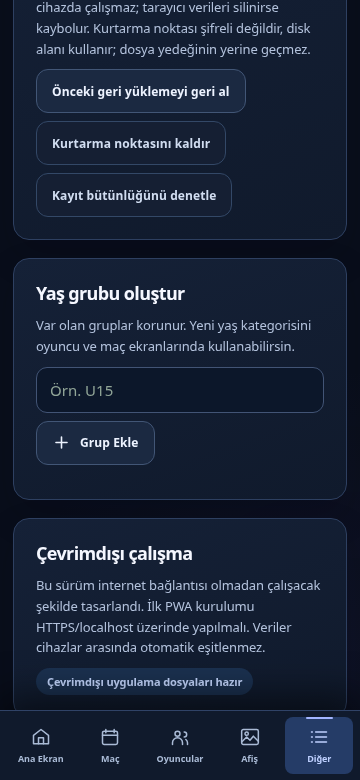
06b-grup-ekleme-ve-yedek.png7. Oyuncu formu ve klavye odağı
Önemli erişilebilirlik hatası
Doğum yılı ve tarihini birlikte sunmak, başlangıçta lisans ve durum gibi alanları açmak formu uzatıyor. Daha önemlisi: modal açıkken Tab odağı arka plandaki Oyuncu Ekle düğmesine geçti; odak modal içinde tutulmuyor. Form alanlarının erişilebilir adları mevcut.
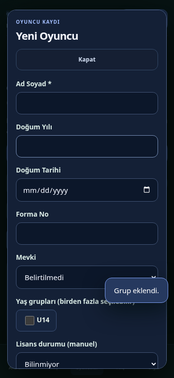
07-oyuncu-formu.png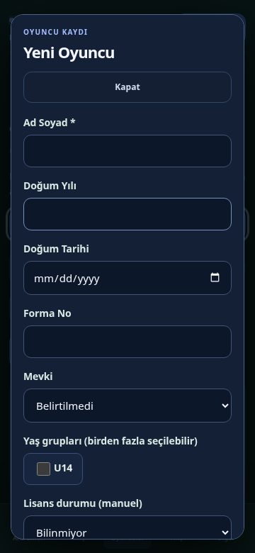
07b-modal-klavye-odagi.png8. Kaydedilmemiş maç taslağı
Kritik kullanım hatası
Rakip=Sahil Spor, saha=Kent Stadı, tarih=2026-10-24, saat=14:00 girildi. Oyuncular sekmesine geçilip Maç sekmesine dönüldü. Alanlar boşaldı; hiçbir onay/uyarı çıkmadı. Kaydedilmemiş emek sessizce kayboluyor. Bu bulgu kaydedilmiş maçların silindiği iddiası değildir.
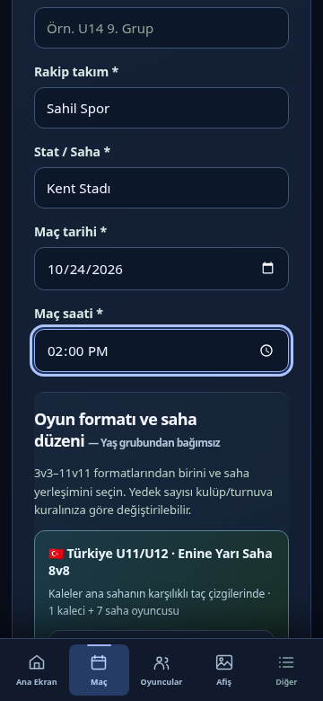
08a-doldurulan-mac.png08b-kaybolan-taslak.png9. Kadro seçimi
Zayıf
Başlık, kulüp seçici, beş aşamalı gezinti ve metrikler ilk ekranı dolduruyor; oyuncular aşağıda. Otomatik ilk kadro doldurma işe yarıyor fakat oyuncu seçme işinin önüne gereksiz açıklama ve göstergeler konmuş.
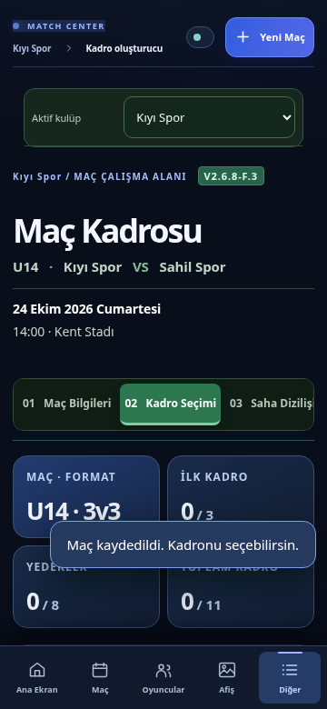
09-kadro-secimi.png10. Saha dizilişi
Zayıf mobil öncelik
Saha ekranının ilk görünümünde saha yok. İlk oyuncu düğmesi yaklaşık 1359 px aşağıda. Üstte aynı maç/gezinti bilgileri tekrar ediliyor. Yedek kartında OTHER kodu görünüyor. Oyuncu adı/forma numarası ve konum düğmeleri ise anlaşılır bir temel sağlıyor.
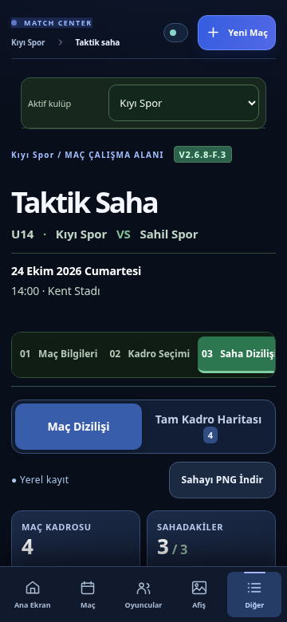
10-saha-dizilisi.png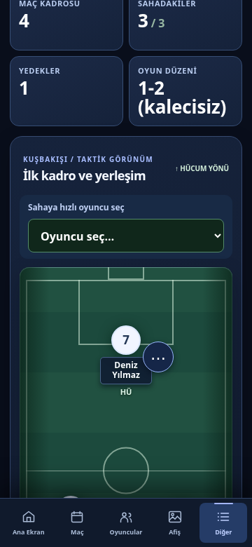
10b-saha-oyuncular.png11. Canlı maç hazırlığı
Gereksiz teknik dil
Canlı oturum oluştur ve 25,25 biçiminde devre girişi, kullanıcıya iç sistemin kavramlarını anlatıyor. Hazırlama ve başlatmanın ayrı olması yanlış başlatmayı önleyebilir; bunun daha sade anlatılması gerekiyor.
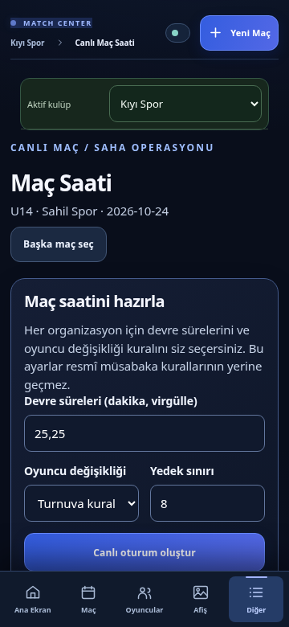
11-canli-hazirlik.png12. Canlı maç operasyonu ve özet
Kritik tutarlılık ve hız sorunları
Sayfa yaklaşık 4349 px; gol/kart formu yaklaşık 2504 px aşağıda. Saat, saha, iki farklı oyuncu değişim arayüzü, gol/kart, rapor ve saat düzeltmesi aynı sayfaya yığılmış. Canlı toplam 01:02 iken özet ve oyuncu süreleri 00:00 kaldı. Saat büyük ve okunur; buna rağmen operasyon ekranı hızlı müdahaleyi desteklemiyor.
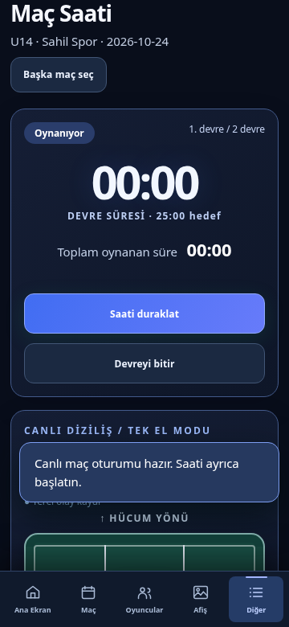
12-canli-mac.png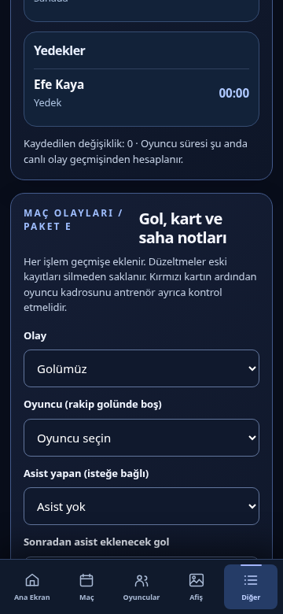
12b-gol-kart-formu.png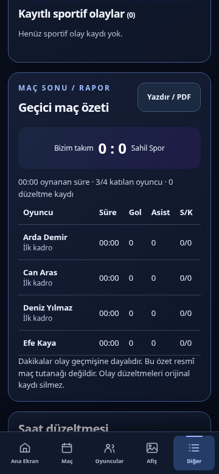
12c-canli-ozet-sureleri.png13. Afiş editörü ve önizleme
Gezinti kalabalık
Beş aşamalı maç gezintisi, dört stüdyo sekmesi ve uygulama alt menüsü üst üste. İlk görünümde önizleme sekmesinde bile afiş büyük ölçüde aşağıda. Kalıcı indirme/paylaşım alanı olumlu. Mobil önizlemede küçük metinleri denetlemek zor.
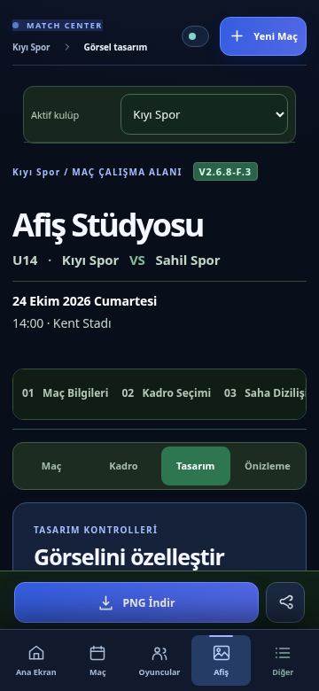
13-afis-studyo.png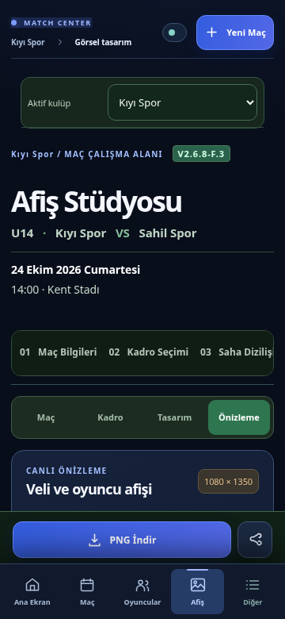
14-afis-onizleme.png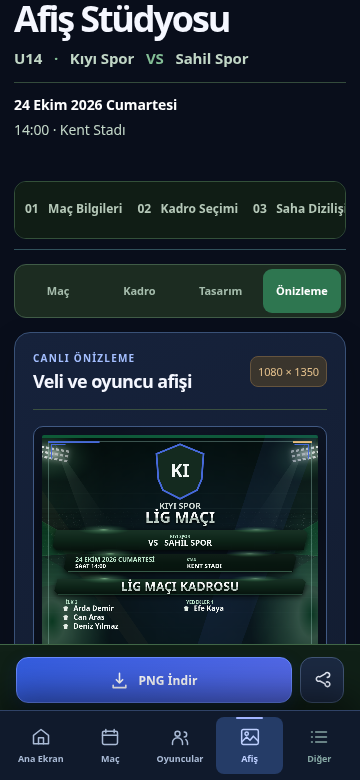
14b-afis-gorseli.png14. PNG çıktısı ve kaynakla karşılaştırma
Kritik içerik hatası
PNG üretildi ve indirildi; isim, tarih ve saat okunuyor. Ancak kaydedilmiş müsabaka türü friendly/Hazırlık, lig alanı boş olmasına rağmen çıktı LİG MAÇI ve LİG MAÇI KADROSU diyor. Az oyunculu içerikte alt yarıda büyük boşluk var; varsayılan şablon içeriğe uyarlanmıyor.
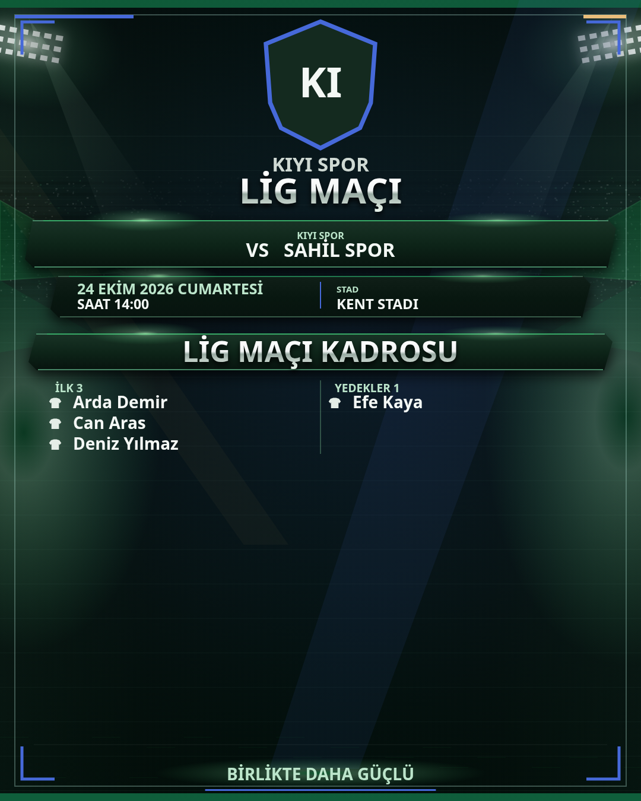
15-uretilen-afis.png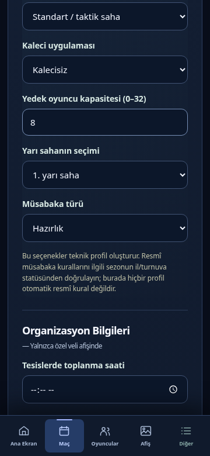
16-afis-kaynak-hazirlik.pngİşe yarayan temel
Oyuncu, maç, kadro ve afiş arasında gerçek bir veri akışı var. İlk kadro doldurma, okunur kronometre ve PNG indirme çalıştı. Birçok form alanının erişilebilir adı var. Sorun önceliklendirme, günlük kullanım yükü ve bazı çıktıların tutarlılığı.
Sınırlar
Gerçek Z Fold, katlama, Android klavyesi, ekran okuyucu, sayısal kontrast, güneş altında kullanım, tam güvenlik veya gerçek kullanıcı araştırması yapılmadı. Çevrimdışı çalışma ve yedek geri yükleme bu turda yeniden sınanmadı. İnceleme yayındaki F.3 ve bu oturumla sınırlıdır.